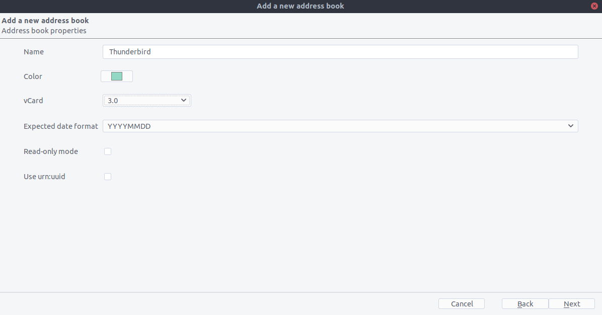
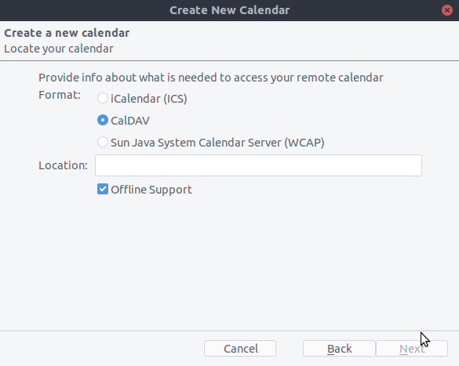

Synchroniseren met Thunderbird
Thunderbird <https://www.thunderbird.net>`_ is een krachtige en volwassen mailcliënt die kan worden omgezet in een volwaardige PIM. Thunderbird mist echter ondersteuning voor adresboek synchronisatie via CardDAV en het mist ook de mogelijkheid om automatisch kalenders en adresboeken te ontdekken die beschikbaar zijn op de server. Daarom zijn er voor de synchronisatie met Nextcloud add-ons nodig, die eenvoudig te installeren zijn via de add-on manager van Thunderbird.
Aanbevolen methode
For this method, you need to have two add-ons installed:
When they are installed, if you are on Windows, go to Extras/Synchronisation settings (TbSync) or Edit/Synchronisation settings (TbSync) if on Linux, and then:
Kies in de accountmanager “Add account / CalDAV / CardDAV account”.
Ga in het volgende venster naar de standaardinstelling genaamd Automatische configuratie en klik op volgende.
Voer een accountnaam in, die je vrij kan kiezen, gebruikersnaam, wachtwoord en de URL van je server en klik op volgende.
In the next window, TbSync should have autodiscovered the CalDAV and CardDAV addresses. When it has, click Finish
Now check the box Enable and synchronize this account. TbSync will discover all address books and calenders your account has access to on the server
Vink het vakje aan naast elke kalender en adresboek die je wenst te synchroniseren, stel ook in hoe vaak je ze wenst te synchroniseren en klik op de knop Synchronizeer nu.
After the first successful synchronisation is complete, you can close the window. Henceforth, TbSync will do the work for you. You are done and can skip the next sections (unless you need a more advanced address book)
Alternatief: Gebruik van de CardBook add-on (alleen contactpersonen)
CardBook is an advanced alternative to Thunderbird’s address book, which supports CardDAV. You can have TbSync and CardBook installed in parallel.
Klik op het CardBook-icoontje in de rechterbovenhoek van Thunderbird:
In CardBook:
“Adresboek > Nieuw Adresboek Remote > Next
Selecteer CardDAV, vul het adres van jouw Nextcloud-server, jouw gebruikersnaam en wachtwoord in.

Klik op “Valideren”, klik op Volgende, kies dan de naam van het adresboek en klik nogmaals op Volgende:

Als je klaar bent, synchroniseert CardBook jouw adresboeken. Je kan altijd handmatig een synchronisatie opstarten door te klikken op “Synchroniseren” in de linkerbovenhoek van CardBook:

De oude methode: handmatig abonneren op kalenders
Deze methode is alleen nodig als je TBSync niet wil installeren.
Go to your Nextcloud Calendar and click on the 3 dotted menu for the calendar that you want to synchronize which will display an URL that looks something like this:
https://cloud.nextcloud.com/remote.php/dav/calendars/daniel/personal/Ga naar de kalenderweergave in Thunderbird en klik met de rechtermuisknop in het kalendermenu links (waar de namen van de kalenders staan) om een Nieuwe kalender toe te voegen.
Kies Op het netwerk:

Kies CalDAV en vul de ontbrekende informatie in:

Fix voor Thunderbird 60
Als je nog steeds Thunderbird 60 gebruikt, moet je een configuratie-instelling wijzigen om CalDAV/CardDAV te laten werken rond Thunderbird bug #1468918 zoals hier beschreven.